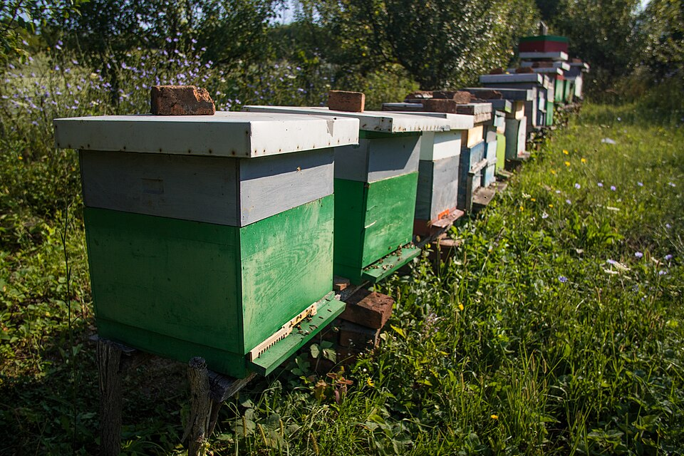

Photo: Michael H. (Laserlicht) · CC BY-SA 4.0Year 8Program a Pico with Python. Make lights respond to a button.Open Year 8 →
Photo: Ivan Radic · CC BY 2.0Community ProjectSmart Beehive. Explore what bees and beekeepers need, then research, sketch and build a model.Open the shared project →